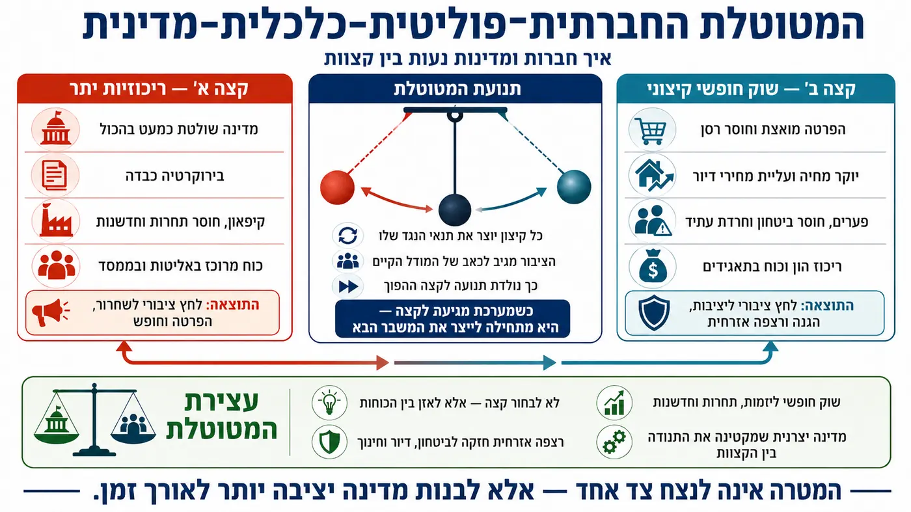

תורת המדינה הדואלית — חזון למדינה יצירתית, חופשית ויציבה במאה ה־21.
מהי תורת המדינה הדואלית?
תורת המדינה הדואלית היא מודל מדיני־כלכלי חדש המבקש להתמודד עם אחת הבעיות העמוקות ביותר של ההיסטוריה האנושית: המטוטלת הבלתי פוסקת בין קפיטליזם קיצוני לבין ריכוזיות מדינתית קיצונית. במשך מאות שנים, חברות אנושיות נעו בין תקופות של חופש כלכלי קיצוני שהובילו לעיתים לריכוז עושר, אי־שוויון, שחיקת מעמד הביניים ואובדן יציבות חברתית, לבין תקופות של שליטה מדינתית כבדה שניסו לפתור את אותן בעיות אך לעיתים יצרו בירוקרטיה עצומה, קיפאון, חוסר יעילות ופגיעה בחירות הפרט.
המודל הדואלי מציע תפיסה אחרת: במקום לבחור צד אחד במטוטלת, יש לבנות מערכת המסוגלת להכיל שני מסלולים מקבילים בתוך אותה מדינה. מצד אחד, שוק חופשי, יזמות, חדשנות, תחרות ויצירתיות כלכלית. מצד שני, מסלול אזרחי יציב המעניק לאדם בסיס קיום, תעסוקה, חינוך, דיור ותשתיות מבלי לבטל את חופש הבחירה שלו.
המטרה אינה לבטל את הקפיטליזם ואף לא להקים מדינה סוציאליסטית קלאסית, אלא ליצור מערכת היברידית חדשה המשלבת את היתרונות של שני העולמות תוך ניסיון לצמצם את החסרונות המבניים של כל אחד מהם.
המודל מניח כי הבעיה המרכזית של מדינות מודרניות אינה רק מחסור במשאבים, אלא חוסר איזון מערכתי. העולם המודרני הצליח לייצר טכנולוגיה מתקדמת, בינה מלאכותית, אוטומציה, שפע תעשייתי ויכולות ייצור עצומות, אך במקביל הולכת ונשחקת היציבות החברתית, היכולת של צעירים לרכוש דיור, תחושת המשמעות של עובדים, ואמון הציבור במוסדות המדינה.
לפי תורת המדינה הדואלית, מדינה מודרנית צריכה לתפקד לא רק כרגולטור, אלא גם כקונצרן אזרחי חכם הפועל למען האזרח. המשמעות היא שהמדינה עצמה יכולה להחזיק במערכות תעשייה, אנרגיה, בנקאות, AI, חקלאות ותשתיות, כאשר הרווחים אינם מיועדים רק להגדלת כוח פוליטי, אלא חוזרים חזרה לאזרחים בדמות דיור, חינוך, תעסוקה ושירותים יציבים.
שוק חופשי + רצפה אזרחית חזקה = מדינה בריאה יותר לאורך זמן.
מרכיבי מדינת השוק הדואלי
קונצרן לאומי יצרני
אחד המרכיבים המרכזיים בתורת המדינה הדואלית הוא רעיון “הקונצרן הלאומי”- מערכת כלכלית־מדינתית הפועלת לצד השוק החופשי, אך אינה מבוססת רק על מיסוי האזרחים. במקום מדינה התלויה כמעט לחלוטין במסים, חובות והלוואות, המודל מציע מדינה המחזיקה בעצמה מנועי ייצור, תעשייה, אנרגיה, AI ותשתיות — בדומה לקונצרן אסטרטגי עצום הפועל למען יציבות האזרחים.
המטרה אינה לבטל את השוק הפרטי, אלא ליצור עוגן יציב בתוך הכלכלה הלאומית. בעוד השוק החופשי ממשיך לפעול, להתחרות, לחדש ולהתפתח, הקונצרן הלאומי מספק שכבת יציבות ארוכת טווח שאינה תלויה לחלוטין בתנודות השוק, משברים פיננסיים או אינטרסים קצרי טווח.
לפי המודל, אחת הבעיות הגדולות של מדינות מודרניות היא דליפת הון. אזרחים עובדים, צורכים ומשלמים מסים, אך חלק עצום מההון יוצא מהמערכת הלאומית דרך ריכוזי הון פרטיים, תאגידים גלובליים, ריבית, ספקולציה פיננסית ובריחת הון. המדינה הופכת תלויה יותר ויותר בחוב, בעוד האזרחים חשים שהמערכת כולה מתרחקת מהם.
הקונצרן הלאומי מנסה ליצור “לולאת הון בלתי נזילה” — מערכת שבה חלק משמעותי מההון נשאר בתוך המערכת הלאומית וממשיך להזין אותה מחדש במקום לדלוף החוצה.
תעשיות לאומיות
פי המודל, הקונצרן הלאומי אינו חייב להשתלט על כל הכלכלה. הוא מתמקד בעיקר בתחומים אסטרטגיים בעלי השפעה מערכתית ארוכת טווח:
אנרגיה:
אנרגיה היא הבסיס של כל מערכת תעשייתית. המדינה הדואלית עשויה להחזיק במערכות אנרגיה סולארית, אגירת אנרגיה, תשתיות חשמל חכמות ואף טכנולוגיות אנרגיה עתידיות. הרווחים ממכירת אנרגיה חוזרים חזרה למערכת הלאומית במקום להישאב החוצה בלבד.
בנקאות ואשראי:
המודל רואה במערכת הבנקאית אחד ממוקדי הכוח המרכזיים בעולם המודרני. לכן הבנק הדואלי מהווה חלק מהלולאה הכלכלית הלאומית ומאפשר מימון ארוך טווח לתשתיות, דיור, תעשייה וחדשנות.
תעשייה אוטומטית ובינה מלאכותית:
המדינה עשויה להחזיק במרכזי AI, רובוטיקה ותעשייה מתקדמת. במקום שהאוטומציה תשרת רק תאגידים פרטיים, חלק מהתפוקה חוזר למערכת האזרחית.
דיור ובנייה מודולרית:
הקונצרן הלאומי יכול להחזיק בחברות בנייה ציבוריות המשתמשות בטכנולוגיות תיעוש, AI ובנייה מודולרית להורדת עלויות הדיור.
חקלאות ומזון:
חקלאות חכמה, הידרופוניקה, אוטומציה חקלאית וייצור מזון יציב עשויים להיות חלק מהמערכת כדי לחזק ביטחון תזונתי לאומי.
תשתיות ותחבורה:
כבישים, רכבות, תקשורת, תשתיות מים ואינטרנט מהיר — כל אלה יכולים להפוך למנועים כלכליים ארוכי טווח במקום רק “הוצאה ציבורית”.
רווחיות בלולאת הון בלתי נזילה
כיצד הקונצרן הלאומי מייצר כסף
במודל הדואלי, המדינה אינה מתבססת רק על גביית מסים. הקונצרן הלאומי עצמו פועל כישות יצרנית: מכירת אנרגיה, שירותי בינה מלאכותית, תעשייה, תשתיות, שירותים פיננסיים, דיור, טכנולוגיה, ייצוא, חקלאות, השקעות ארוכות טווח
במקום מצב שבו המדינה רק לוקחת כסף מהשוק באמצעות מס גבוה, היא גם מייצרת ערך כלכלי אמיתי.
כך נוצר שינוי תפיסתי:
המדינה אינה רק רגולטור — אלא שחקן יצרני בתוך הכלכלה.
לולאת ההון הבלתי נזילה
זהו אחד המושגים המרכזיים במודל.
הכוונה היא למערכת שבה ההון זורם בתוך מבנה לאומי סגור יחסית ומזין את עצמו מחדש.
לדוגמה:
האזרח עובד →
משלם לבנק הדואלי →
הבנק מממן תשתיות ודיור →
התשתיות מייצרות תעסוקה →
העובדים צורכים בתוך המערכת →
הרווחים חוזרים לקונצרן הלאומי →
הקונצרן משקיע מחדש באזרחים.
במקום “דליפת הון” החוצה, חלק משמעותי מהכסף ממשיך לנוע בתוך הלולאה הלאומית.
המודל טוען כי ככל שהלולאה יעילה יותר:
פחות חוב חיצוני נדרש
פחות תלות בתאגידים גלובליים נוצרת
והמדינה הופכת יציבה יותר לאורך זמן.
קרן הון ובנק
מהו תפקיד הבנק הדואלי
הבנק הדואלי נועד לממן:
דיור
תעשייה
תשתיות
אנרגיה
AI
חינוך
חקלאות
יזמות
ערים חדשות
פרויקטים ארוכי טווח
הוא אינו פועל רק לפי רווח רבעוני קצר־טווח, אלא לפי יציבות מערכתית ארוכת טווח.
כיצד הבנק משתלב בלולאת ההון
במערכת רגילה:
האזרח משלם ריבית →
הבנק הפרטי צובר רווח →
חלק מההון זורם לבעלי מניות, קרנות וחוב חיצוני.
במודל הדואלי:
האשראי חוזר חזרה למערכת הלאומית.
לדוגמה:
הבנק מממן דיור
הדיור מייצר תעסוקה
העובדים צורכים בתוך הכלכלה
הקונצרן הלאומי מייצר רווחים
הרווחים חוזרים לבנק ולמערכת
כך ההון אינו “נעלם” החוצה באותה רמה, אלא נשאר בתוך לולאת ייצור, תשתית ופיתוח.
דיור
דיור במודל הדואלי
אחת הבעיות המרכזיות בעולם המודרני היא משבר הדיור. במדינות רבות, גם אנשים עובדים מתקשים להגיע לבעלות על דירה. לפי המודל הדואלי, דיור אינו רק מוצר השקעה פיננסי אלא גם תשתית אזרחית בסיסית.
לכן המדינה הדואלית עשויה להחזיק בחברות בנייה ותשתיות ציבוריות הבונות ערים מודולריות, יעילות וזולות יותר, תוך שימוש באוטומציה, AI, תיעוש בנייה ואנרגיה מתקדמת.
המודל מציע חלוקה עירונית חכמה:
מרכזי תעשייה ועסקים, טבע עירוני, אזורי מגורים מודולריים, חקלאות מתקדמת ותשתיות אנרגיה נקייה. הרעיון הוא להוריד עלויות מערכתיות ולא רק “לסבסד” מחירים.
רצפה אזרחית חזקה
המסלול האזרחי הוא אחד המרכיבים החדשניים ביותר במודל. זהו מסלול מקביל לשוק החופשי, המאפשר לאזרח להשתלב במערכת יציבה המעניקה: דיור נגיש, תעסוקה, הכשרה מקצועית, חינוך, תשתיות, בריאות וביטחון בסיסי.
האזרח אינו מחויב להצטרף למסלול זה. הוא יכול לבחור לפעול לחלוטין בשוק החופשי. אך עצם קיומו של המסלול האזרחי יוצר איזון כוח חדש מול שוק פרטי שעלול להפוך אגרסיבי מדי.
במקום מצב שבו אדם נזרק לקריסה כלכלית מוחלטת אם איבד עבודה, המדינה הדואלית מציעה אפשרות חזרה למערכת יציבה שמאפשרת התאוששות, למידה מחדש והתחלה חדשה.
טכנולוגיה וממשל חכם
בינה מלאכותית והמדינה הדואלית
המודל רואה ב־AI כוח שישנה את המבנה הכלכלי והחברתי של האנושות. אוטומציה עתידה להחליף חלק עצום ממקומות העבודה המסורתיים. ללא התאמה מבנית, הדבר עלול להוביל לאבטלה, חוסר יציבות וריכוז כוח קיצוני בידי תאגידים בודדים.
לכן המדינה הדואלית מנסה לשלב AI בתוך המערכת האזרחית עצמה: תכנון תשתיות, ניהול אנרגיה, תחבורה, חינוך מותאם אישית, רפואה, בנקאות ציבורית, תעשייה אוטומטית.
במקום מצב שבו AI משרת רק בעלי הון, המודל מבקש להפוך אותו לחלק ממערכת המשרתת גם את היציבות החברתית.
חינוך ותודעה
המודל אינו רואה בחינוך רק הכשרה לשוק העבודה. הוא רואה בחינוך מערכת ליצירת אדם יציב יותר, בריא יותר ומודע יותר.
לכן החינוך במודל עשוי לשלב: חשיבה ביקורתית, יצירתיות, בריאות, תנועה, נשימה, פילוסופיה, הבנת מערכות טכנולוגיה ובינה מלאכותית.
המטרה היא לא רק לייצר “עובדים”, אלא אזרחים המסוגלים להבין את העולם המורכב שבו הם חיים.
המטוטלת החברתית־פוליטית־כלכלית
המודל נולד מתוך הבנה שהיסטורית חברות נעות בין קצוות: ריכוזיות יתר מול שוק חופשי קיצוני, בירוקרטיה מול הפקרה, ביטחון מול חופש. כל קצה יוצר בעיות שמזינות את הקצה ההפוך.
ההיסטוריה האנושית נעה שוב ושוב בין קטבים אידיאולוגיים. חברות רבות קמו מתוך רצון לתקן עוולות של משטר קודם, אך עם הזמן יצרו עוולות חדשות. כאשר מדינה הופכת קפיטליסטית מדי, נוצר לעיתים ריכוז הון, שחיקת מעמד הביניים, עליית מחירי דיור, חוסר יציבות תעסוקתית ותלות הולכת וגוברת של האזרח בכוחות שוק בלתי נשלטים. כאשר מדינה הופכת ריכוזית מדי, היא עלולה לייצר קיפאון, בירוקרטיה, דיכוי יצירתיות ותלות מוחלטת במערכת.
המודל הדואלי טוען כי שתי הגישות אינן פתרון סופי, משום ששתיהן מייצגות קטבים של אותה מטוטלת היסטורית. במקום לבחור צד, יש ליצור מנגנון איזון דינמי המונע מהמערכת להגיע לקצה הרסני.
המודל רואה את המדינה לא כמערכת אידיאולוגית מוחלטת, אלא כמערכת חיה שצריכה לשמור על איזון בין יציבות לבין חופש, בין קהילה לבין פרט, ובין ביטחון לבין חדשנות.

בית המחוזות: שכבת אחריות מחוזית
במקום שכל הכוח יישאר רק במרכז, המודל מדגיש שכבת אחריות מחוזית: מחוזות שמחוברים לשטח, יודעים לזהות צרכים מקומיים, ויכולים לשמש מנגנון איזון ופיקוח בין האזרח לבין הממשלה.
מחוזות מקומיים
חלוקת אחריות אזורית, הכרות עם השטח ונציגות מחוזית.
פיקוח ובקרה
חקיקה מחוזית, תחבורה, שירותים ותעדוף קרוב יותר לאזרח.
מנגנון חירום דמוקרטי
כאשר המערכת מתנתקת, המחוזות יכולים להחזיר את המדינה לבחירות ולסדר ציבורי.
דיאגרמות
מפת המודל בתמונות
שאלות נפוצות
שאלות נפוצות על תורת המדינה הדואלית
מהי תורת המדינה הדואלית?
תורת המדינה הדואלית היא מודל מדינה המציע שילוב בין שוק חופשי ותחרותי לבין רצפה אזרחית חזקה שמעניקה ביטחון, דיור, חינוך, תעסוקה ושירותים בסיסיים.
מה ההבדל בין המודל לבין סוציאליזם או קפיטליזם רגיל?
המודל אינו מבטל את השוק החופשי ואינו הופך את המדינה למערכת ריכוזית מלאה. הוא יוצר שני מסלולים מקבילים: מרחב יזמי פתוח ומסלול אזרחי יציב.
למה המודל חשוב בעידן AI?
בינה מלאכותית, אוטומציה וריכוז הון עלולים להעמיק אי־יציבות. המודל מציע תשתית ציבורית חכמה שמחזירה חלק מן הערך לציבור ומייצרת ביטחון בסיסי.
איך זה קשור לבוטים?
הבוטים הם שכבת הסבר ולמידה שמנגישה את המודל, עונה על שאלות ומאפשרת למשתמשים להכיר את הרעיונות בצורה אינטראקטיבית.
רוצה ללמוד דרך בוט?
הבוט של מדינת השוק הדואלי מאפשר לשאול שאלות, להבין את הפרקים ולהכיר את המודל בצורה אינטראקטיבית.